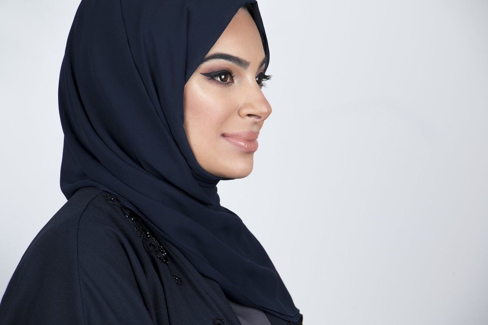

Law · Government · Business · Diplomacy
Profile

Lubna Qassim is an international lawyer, policy leader and former senior multilateral diplomat whose career spans law, government, financial services and international affairs. She advises institutions, governments and boards, bringing a perspective shaped by experience at the intersection of law, commercial interests, public policy and international relations.
Her career has taken her from international legal practice in London and Dubai to economic legislative reform in the UAE, executive leadership at Emirates NBD and senior diplomatic representation at the United Nations. Across these roles, she has worked on complex institutional questions requiring legal judgment, political understanding and commercial perspective.
She began her career at Clifford Chance in London and Dubai before moving into public service. As Director of Economic Legislation at the UAE Ministry of Economy, she led a programme encompassing fourteen major economic laws, among the country’s most significant economic legislative reforms in more than two decades. The reforms spanned foreign investment, commercial companies, competition and bankruptcy. In 2009, she worked as a Public Sector Reform Consultant to the World Bank, contributing to government reform initiatives across the Gulf Cooperation Council region.
Her early international policy experience also included serving as a Research Associate at the UK House of Lords in 1999, becoming the first Emirati to work at the institution. Her work included high-level research and a policy paper on United Nations Security Council reform, reflecting an early engagement with international governance and institutional design.
At Emirates NBD, she became the bank’s first female C-suite executive, serving as Senior Executive Vice President, Group Chief General Counsel and Group Company Secretary. She led a team of approximately 300 professionals, with responsibilities spanning corporate governance, legal and regulatory affairs, complex disputes and institutional transformation at one of the Middle East’s largest financial institutions.
From 2018 to 2026, she served as Minister Plenipotentiary, First Degree, appointed by Presidential Decree. Between 2019 and 2024, she served as the UAE’s Deputy Permanent Representative to the United Nations and International Organizations in Geneva, including periods as Chargé d’Affaires. Her diplomatic work involved coalition-building, multilateral negotiations and advancing UAE priorities across the international system.
She led the UAE’s successful campaign for election to the United Nations Human Rights Council and its campaign for the Presidency of the World Meteorological Organization. Her wider multilateral engagement encompassed international law, human rights, peace and security, global health and climate-related issues.
Following her return from Geneva, she served as a Senior Adviser in International Law at the UAE Ministry of Foreign Affairs headquarters, advising on matters concerning international law, treaty practice and the legal dimensions of foreign policy.
She is a Distinguished Fellow at UCLA’s Center for Middle East Development and serves on boards and advisory bodies across the United States, the Middle East and Europe. Her work brings together perspectives from government, business and diplomacy to inform institutional strategy, governance and decisions with long-term consequences.